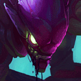
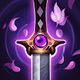
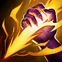
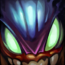
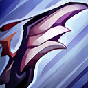
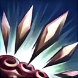
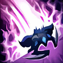
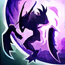

起手裝備
 長劍
長劍

7.3f官方未列此英雄的一般技能／基礎能力調整；本輪按技能與位置需求複核評級、配置及裝備間接影響。 打野共通：燃燒基礎18–158、額外雙防係數20%；節約30金、落後55金，不能沿用舊清營與購裝時間。
維持 A。孤立爆發與位移重置適合抓落單；敵方貼在一起時核心條件消失，須等戰場分散。 完整可用；優勢與限制相抵，需要合理陣容及正常發育。
妖夢鬼刀 → 巨蛇鋒牙：前者提供移動找角度與物理爆發，後者補針對反覆護盾；護盾少時應使用情境替換。保留五件成裝與獨立鞋線；核心未成形時不把最後一格的保命／穿透能力當成已有。反盾是有條件位置：確認敵方反覆大盾後才優先，護盾少時依情境表替換。
黑暗收割：壓低敵方血線後才有收割收益，不能為疊層越過前排。其餘選用即刻衝擊、傲慢、眼球收集器、絕對專注，依本頁輸出方式與生存需求配套。
閃現＋重擊。重擊留意物件血線，野區收益與承傷調整後先判斷續航再入侵；另一技能服務進退，不能預設同時有點燃。
本站獨立邏輯複核：以既有手機版技能／裝備／符文資料與已整理的7.3f官方差異推演；本輪不採用外站評級、勝率或推薦配置。 完成策略與配置一致性複核，不等於全部技能逐級數值、傷害計算及所有特殊互動已實測；既有缺證項目仍保留。
星蝕：物攻降低5，保留護盾與短換血用途；不因削弱就無條件換裝，持續混戰可比較飲血戰錘。
妖夢鬼刀 → 巨蛇鋒牙：前者提供移動找角度與物理爆發，後者補針對反覆護盾；護盾少時應使用情境替換。保留五件成裝與獨立鞋線；核心未成形時不把最後一格的保命／穿透能力當成已有。反盾是有條件位置：確認敵方反覆大盾後才優先，護盾少時依情境表替換。



五件成裝與鞋子分開列示；起手與核心是購買路線，不是額外佔用的成裝欄位。鞋子完成時機仍依對線壓力與回城金錢調整。


黑暗收割：壓低敵方血線後才有收割收益，不能為疊層越過前排。其餘選用即刻衝擊、傲慢、眼球收集器、絕對專注，依本頁輸出方式與生存需求配套。


閃現＋重擊。重擊留意物件血線，野區收益與承傷調整後先判斷續航再入侵；另一技能服務進退，不能預設同時有點燃。
加點優先：Q > W > E
優先 Q > W > E，以孤獨的恐懼承擔主要循環；初級取點仍依15級表保留完整基本技能，不把主升順序誤認成開局必須連點同一招。

當敵方失去卡力斯視野時，下一次對英雄的普攻會造成額外魔法傷害並緩速。利用草叢與大絕反覆刷新可提高爆發。

以利爪斬擊造成物理傷害；目標處於孤立狀態時傷害大幅提高。進化後增加攻擊距離，並返還對孤立目標施放時的部分冷卻。

發射尖刺造成物理傷害，站在爆炸附近時會回復生命。進化後追加多枚尖刺，揭露並大幅緩速命中的敵人。

跳向指定區域並對落點造成物理傷害。進化後增加距離，參與擊殺英雄時會重置冷卻。

被動讓卡力斯在提升大絕等級時進化一項技能；主動進入隱形並獲得跑速，可在短時間內再次施放。
孤立爆發與位移重置適合抓落單；敵方貼在一起時核心條件消失，須等戰場分散。
4技隱形接近 → 被動普攻 → 1技 → 2技 → 4技換位
先用隱形刷新被動，普攻後接一技吃滿孤立傷害，再用第二段大絕重新隱形躲技能或追擊。
2技緩速 → 3技跳入 → 1技 → 普攻 → 擊殺後重置跳離
先用進化二技確認緩速與孤立，再跳入收割；只有確定能取得擊殺重置時才使用三技進場。
1技孤立傷害 → 普攻 → 2技回血 → 1技 → 重擊收尾
大型物件通常符合孤立條件，一技冷卻短且傷害高；保留重擊配合一技同時打出，降低被搶風險。
前四級以快速清野與保留血量為主，五級優先進化一技，提高孤立目標的清野與單挑效率。Gank 時先確認敵人附近沒有兵線或隊友，孤立標記成立後再用大絕隱形貼近。
妖夢鬼刀 → 巨蛇鋒牙成形後，依刺客／孤立爆發／收割重置定位處理團戰與兵線；第三件接席利妲咒怨。後兩件按情境調整，保留主要輸出循環或承傷功能。支援前確認重擊層數、充能與物件時間，沒有線權時先交換另一側資源。
團戰不要擔任第一進場，等待敵方技能交完或殘血目標脫離隊伍，再利用三技進場收割。完成擊殺後若進化三技，可立刻重置跳躍離場或追下一人。
孤立爆發與位移重置適合抓落單；敵方貼在一起時核心條件消失，須等戰場分散。 名單僅作機制對位提示；優先看控制是否交掉、兵線／地形與隊友跟進，不宣稱勝率剋制榜。
對局名單是機制與分路判斷，不代表固定勝率；需同時看雙方熟練度、兵線與陣容。
替換以本頁五件成裝為基準；同一格建議擇一。二、三級鞋是一條升級線，換鞋時整條同步；魔劍進化不占新欄位。
高
觸發：敵方前排物防／魔防成形，或近身普攻威脅明顯。
已帶對應穿透或冰霜之心時保留，不重複購買；依實際傷害類型決定。
高
觸發：主要死亡原因是一輪集火，無法完成輸出或控制。
同一格有多個建議時擇一；核心成形後依實際威脅調整。
高
觸發：敵方法術先手或持續魔法傷害成為主要威脅。
守護天使 → 魔提斯深淵
依魔法傷害壓力補魔防；已有命脈裝時改用自然之力，避免重複命脈。
依魔法傷害壓力補魔防；已有命脈裝時改用自然之力，避免重複命脈。
高
觸發：魔法傷害與控制鏈影響生存或輸出。
貪婪護脛 → 水星之靴
魔法傷害及可被韌性縮短的控制占主導時，鞋線整條改水星之靴→鎖鏈軍靴。
魔法傷害及可被韌性縮短的控制占主導時，鞋線整條改水星之靴→鎖鏈軍靴。
韌性不能縮短所有控制，例如擊飛；護盾與解控各有適用條件。
高
觸發：敵人持續回復令集火失敗。
席利妲咒怨 → 致死宣告
回復威脅比原穿透裝的特殊效果更重要時，替換而非再疊一件。
回復威脅比原穿透裝的特殊效果更重要時，替換而非再疊一件。
中
觸發：對手護盾多時保留巨蛇；沒有穩定護盾目標時考慮其他功能。
巨蛇鋒牙 → 夜色緣界
對手沒有反覆出現的高額護盾，且其他隊友已能處理護盾時。
巨蛇削盾需要對應目標；改用此裝提供其他輸出或防護功能。
仍維持五件成裝。
7.3f差異核對：本頁已核對本版官方變動與配置引用；本輪逐份獨立評估Tier與配置，不採外站排行；賽勒斯為保守暫定。未核實的完整成長數值保留註記。查看校正範圍。
本頁校正版本：7.3f；校正日期：2026-11-13。
參考來源標示版本：7.3f（官方差異與既有遊戲資料）
完成策略與配置一致性複核，不等於全部技能逐級數值、傷害計算及所有特殊互動已實測；既有缺證項目仍保留。
評級理由：維持 A。孤立爆發與位移重置適合抓落單；敵方貼在一起時核心條件消失，須等戰場分散。 完整可用；優勢與限制相抵，需要合理陣容及正常發育。
維持 A。孤立爆發與位移重置適合抓落單；敵方貼在一起時核心條件消失，須等戰場分散。 完整可用；優勢與限制相抵，需要合理陣容及正常發育。
歷史資料有後續調整時，以較新版本數值為準。
| 項目 | 調整前 | 調整後 |
|---|---|---|
| 基礎生命 | 630 | 640 |
| 每級生命成長 | 120 | 128 |